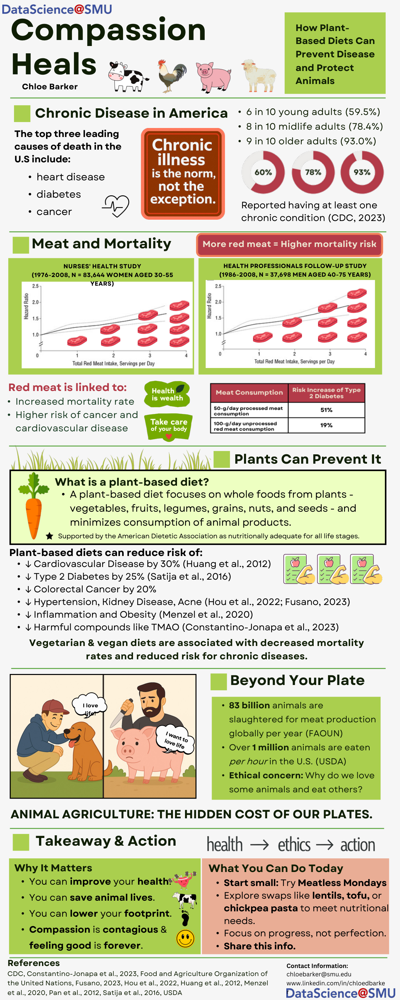

A self-directed infographic on chronic disease and diet, sourced from published cohort studies and designed to turn public-health evidence into a visual narrative readable in one pass.

Per the CDC, 93% of older adults, 78% of midlife adults, and 60% of young adults in the U.S. report at least one chronic condition. Heart disease, diabetes, and cancer remain the top three causes of death. The infographic starts from that baseline and asks a narrower question: what does the published research actually say about diet's role in that picture?
The centerpiece data comes from the Nurses' Health Study (83,644 women, 1976-2008) and the Health Professionals Follow-Up Study (37,698 men, 1986-2008), both showing hazard ratios for mortality climbing with red meat servings per day.
The infographic also brings in the scale of animal agriculture itself, an estimated 83 billion animals slaughtered globally each year (FAO), over one million eaten per hour in the U.S. alone (USDA), framing the health case and the ethical case as two threads of the same argument rather than separate pitches.
Opening with how common chronic illness already is (versus opening with a diet recommendation) gives the reader a reason to keep reading before any ask shows up.
Naming the study size and duration (83,644 women over 32 years) does more persuasive work than stating the finding alone, it signals the claim rests on real longitudinal data.
The closing call to action is deliberately small, "try Meatless Mondays", not a full lifestyle overhaul, since an achievable first step is more likely to actually get taken.